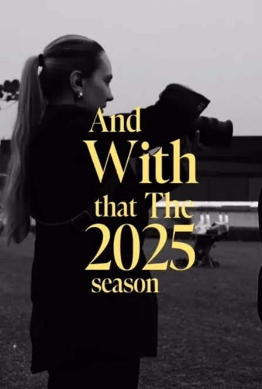
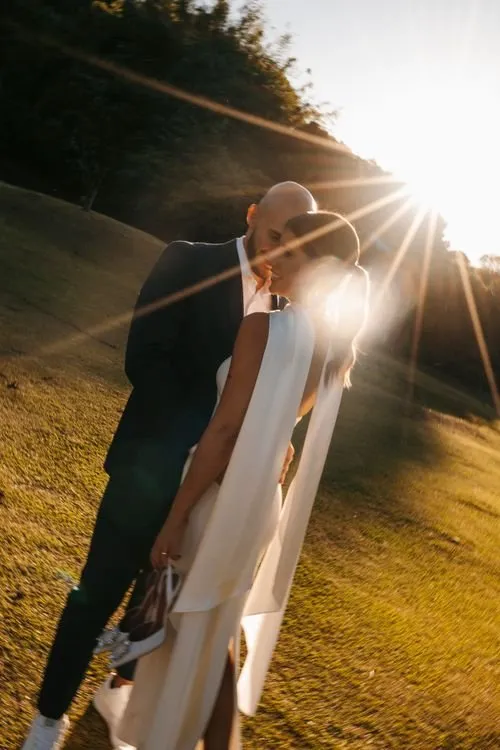
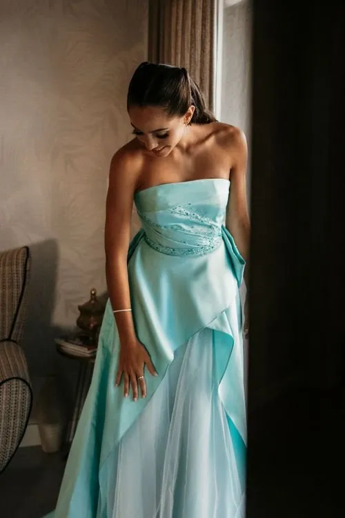
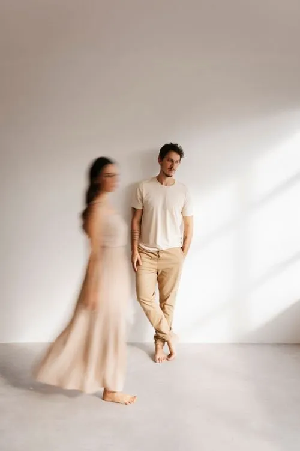
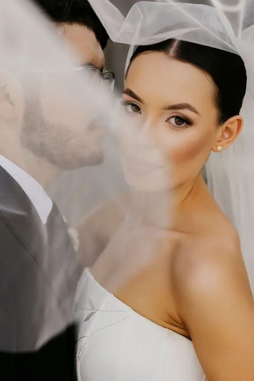
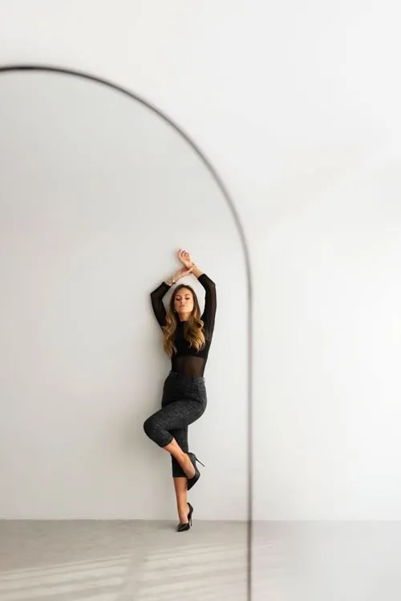

★★★★★
"O curso da Lisi transformou completamente a forma como vejo e produzo minhas fotos. Antes eu copiava outros fotógrafos, hoje eu tenho meu próprio estilo."
por Lisi Viezzer
Do enquadramento à entrega final — aprenda a fotografar com intenção, emoção e a identidade visual que só você pode ter.

É um workshop online completo para fotógrafas que querem ir além do técnico — e transformar cada clique em uma imagem com alma.
Você vai aprender como eu penso antes de apertar o obturador, como conduzo casais, como leio a luz e como crio uma pós-produção que tem a minha assinatura.
Do caos da cerimônia ao silêncio do ensaio — você vai sair daqui com clareza, repertório e confiança para fotografar do jeito que você quer.
Como ler e moldar a luz disponível em qualquer cenário, do meio-dia ao pôr do sol.
Exposição, foco, profundidade de campo — dominados com intenção, não no automático.
Como conduzir, posicionar e criar conexão real para extrair emoção genuína.
Edição no Lightroom com a estética que me define — e que vai definir a sua.
Você tem o equipamento, tem vontade, mas falta estrutura e segurança para cobrar e entregar com confiança.
Você já fotografa, mas quer migrar para o mercado de casamentos e não sabe por onde começar.
Você já trabalha, mas sente que falta uma identidade visual coesa e quer desenvolver uma estética própria.
80 horas de conteúdo distribuídas em módulos progressivos — do básico ao avançado, com foco em casamentos e ensaios.





"Fotografia não é sobre a câmera. É sobre o que você vê quando todos os outros olham para o mesmo lugar."
Sou fotógrafa de casamentos há mais de 10 anos, com mais de 1.200 histórias de amor registradas em todo o Brasil e em outros países.
Comecei como você: cheia de dúvidas, sem mentora, aprendendo na base do erro e do acerto. Essa jornada me ensinou não só a fotografar — me ensinou a criar arte com consistência.
Hoje divido tudo que aprendi para que você não precise percorrer o mesmo caminho sozinha. Aqui você não vai encontrar fórmula. Vai encontrar método, estética e alma.
"O curso da Lisi transformou completamente a forma como vejo e produzo minhas fotos. Antes eu copiava outros fotógrafos, hoje eu tenho meu próprio estilo."
"Em 3 meses após o curso eu já consegui fechar 8 casamentos com o dobro do meu antigo ticket. A parte de precificação e identidade visual mudou meu negócio."
"A Lisi explica com uma clareza que eu nunca tinha encontrado em outros cursos. Aprendi mais em 2 semanas do que em 2 anos assistindo vídeos aleatórios no YouTube."
"O módulo de direção de casais me deu um repertório incrível. Meus clientes agora saem dos ensaios dizendo que se sentiram completamente à vontade — e as fotos mostram isso."
"Nunca imaginei que a Lisi me responderia pessoalmente minhas dúvidas. A proximidade dela com os alunos é rara. Vale muito mais do que o investimento."
Se em 7 dias você não estiver 100% satisfeita com o conteúdo, basta entrar em contato e devolveremos cada centavo do seu investimento — sem perguntas, sem burocracia. Simples assim.